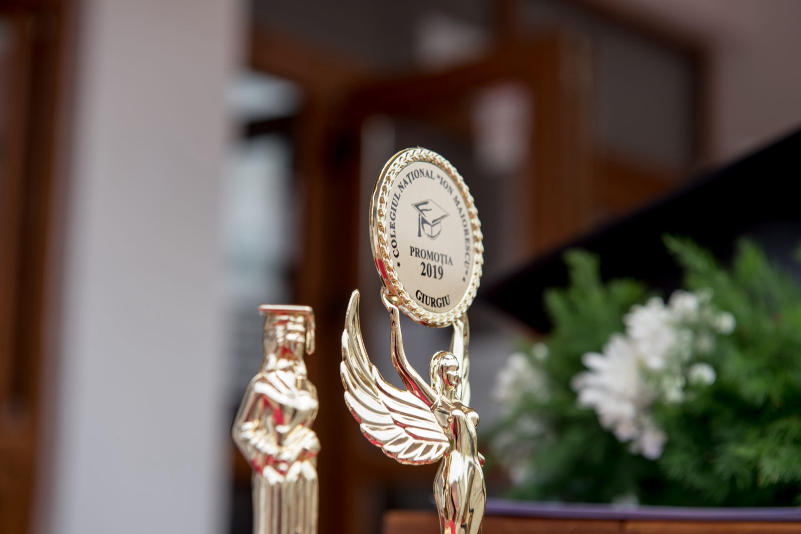

A4 · carton 170 g/m²
Diplome personalizate
Mai multe modele, personalizate pentru instituție și eveniment.
DIPLOME ȘI ACCESORII
De la diploma înmânată pe scenă la micul suvenir păstrat acasă, fiecare detaliu poate spune povestea promoției voastre.
Cere o ofertă ↗
RECUNOAȘTERE, BUCURIE, AMINTIRI
Diplome de înmânat cu mândrie, premii pentru reușite și obiecte care păstrează povestea clasei. Descoperiți opțiunile pentru promoția voastră.
A4 · carton 170 g/m²
Mai multe modele, personalizate pentru instituție și eveniment.
Codurile 1–7
Figurine din plastic cu soclu de marmură (1–5), trofeu Streamline personalizat (6) și trofee din cristal, în diverse forme (7).
4,5 cm sau 7 cm
Medalii inscripționate, cu șnur inclus: mică, 4,5 cm (cod 9), și mare, 7 cm (cod 10). Cutie din plastic disponibilă separat (cod 8).
Cod 11 · cutie sau mapă
O amintire festivă, prezentată într-o cutie sau mapă. Textul se stabilește pentru evenimentul vostru.
Insignă centrală · două panglici
Cocarde în culori variate, cu insignă în centru și două panglici de 10 cm.
Identitatea promoției
Un accesoriu discret pentru a păstra aproape simbolul instituției sau al evenimentului.
Fotografia sau sigla voastră
Alegeți imaginea pe care doriți să o imprimați și trimiteți materialul prin e-mail pentru personalizare.
100% bumbac · XS–XL
Mărimi XS, S, M, L și XL. Culori de bază: roșu, albastru și alb; pentru alte culori, contactați echipa. Personalizare cu fotografie sau siglă.
Plic standard
Invitații pentru a-i aduce pe cei dragi alături de voi la festivitate, din gama Royal.
Imprimare pe o față
Numele și identitatea instituției, vizibile în momentele importante ale promoției.
50 × 35 cm · o față
Un reper vizibil pentru clasă sau promoție, personalizat pentru eveniment.
Fotografiile prezintă exemple din catalog. Anii, denumirile și siglele din imagini sunt ilustrative; personalizarea și disponibilitatea se confirmă în ofertă.
PREGĂTIM ÎMPREUNĂ
Spuneți-ne ce produse doriți, cantitățile și textul de personalizat. Confirmăm modelele, materialele și disponibilitatea în ofertă.